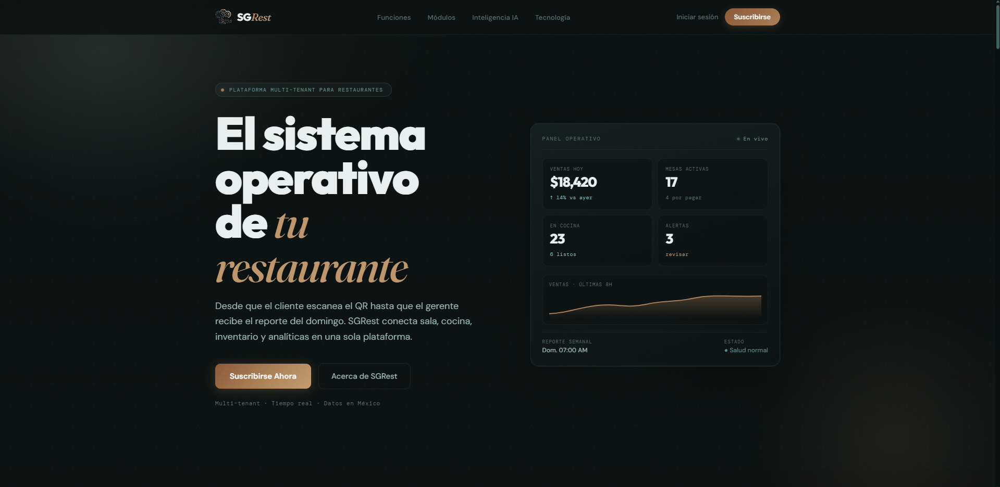
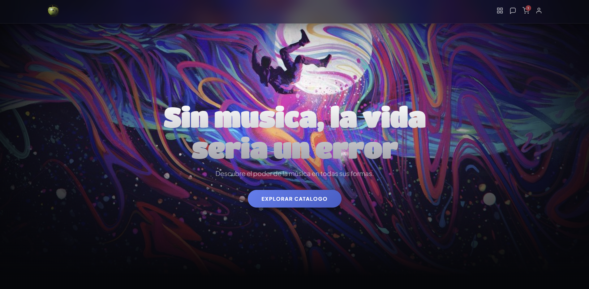
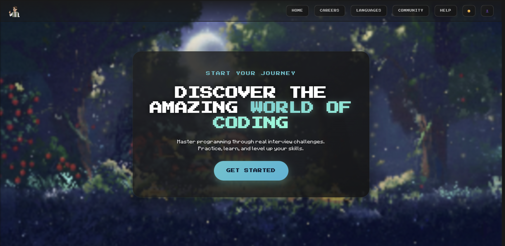
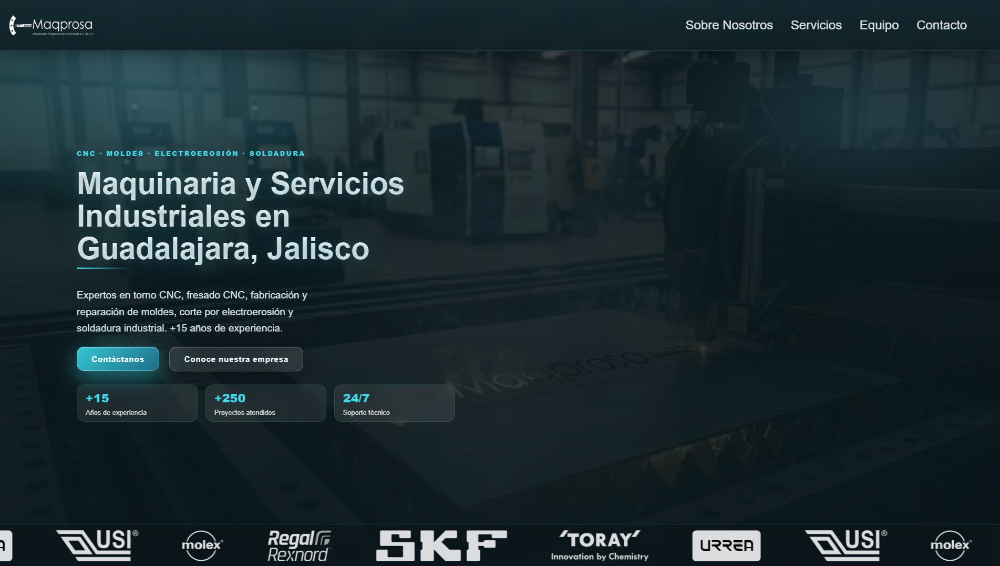
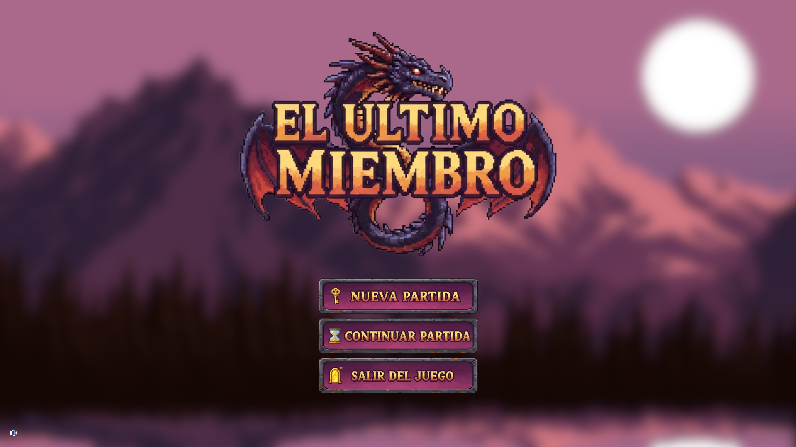
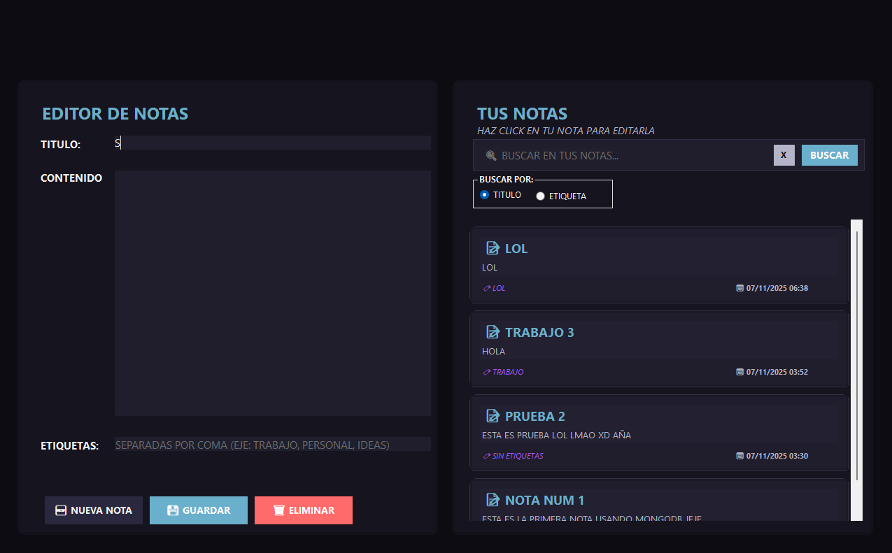

Full-Stack Web Apps
Dashboards, platforms, internal tools, and business apps with responsive frontends and reliable APIs.
Full-Stack Web Developer
I build practical web products end to end: clear interfaces, reliable APIs, and maintainable systems that help teams launch faster and operate with less friction.

I am a full-stack web developer focused on turning ideas into useful, maintainable software. I connect frontend, backend, database, and deployment decisions so each project feels clear for users and sustainable for the team that owns it.
Dashboards, platforms, internal tools, and business apps with responsive frontends and reliable APIs.
Fast, responsive websites with strong content structure, SEO basics, and clear conversion paths.
Catalogs, shopping flows, product pages, and storefront interfaces designed for clarity and trust.
Practical structure for APIs, data models, and modules before a codebase becomes hard to evolve.

Problem: restaurants need one place to coordinate tables, orders, staff roles, inventory, menu configuration, and sales reporting instead of working from disconnected tools.
Technical decisions: React frontend, NestJS REST API, Prisma ORM, PostgreSQL, and Railway deployment to keep the system modular, data-driven, and simple to ship.

Problem: music buyers need a storefront that makes records easy to browse, compare, and discover without losing the personality of a music brand.
Technical decisions: static frontend structure, product-focused navigation, responsive layouts, and visual hierarchy designed around album discovery and purchase intent.

Problem: coding practice can feel intimidating and repetitive, especially when exercises are hard to navigate or feedback is not visually engaging.
Technical decisions: React-based interface, language and difficulty filters, IDE-inspired layout, hints, and a file-explorer flow to make practice feel structured.

Problem: the business needed a professional web presence that explained services clearly and worked well for search engines and social sharing.
Technical decisions: semantic HTML, responsive CSS, simple JavaScript, SEO metadata, and Open Graph tags for stronger previews when shared.

Problem: the project needed to prove that a complete game-like system could manage characters, maps, enemies, inventory, and persistent progress from scratch.
Technical decisions: C# and .NET 8, WinForms UI, MySQL persistence, OOP-driven entities, and pathfinding logic for exploration and interactions.

Problem: users need a lightweight way to create, edit, delete, and find notes without a heavy workflow or bloated interface.
Technical decisions: C# desktop interface, WinForms for speed, MongoDB for flexible note storage, and search-first interactions for quick retrieval.
SGRest started with a clear operational problem: restaurant teams need table management, order tracking, menu configuration, staff roles, inventory, and sales reporting in one coherent system. I modeled the app around real restaurant workflows so the backend could grow by domain instead of becoming a generic CRUD layer.
The main architecture choice was a React frontend connected to a NestJS API, with Prisma and PostgreSQL handling relational data. This made the data layer explicit and kept deployment manageable through Railway.
CodingPractices solves a motivation problem: students need practice, but many platforms feel flat or hard to navigate. I designed the flow around language, difficulty, editor, hints, and file navigation so the learning loop feels clear and repeatable.
The key technical decision was to prioritize a lightweight React interface with strong state organization and visual hierarchy, keeping the experience fast while still feeling playful.
A breakdown of the domain modules behind SGRest, why the backend is organized around restaurant workflows, and how Prisma + PostgreSQL support the most important operations.
Notes on balancing clean architecture with delivery speed, including how I decide when to separate modules, when to keep things simple, and how AI helps during implementation.